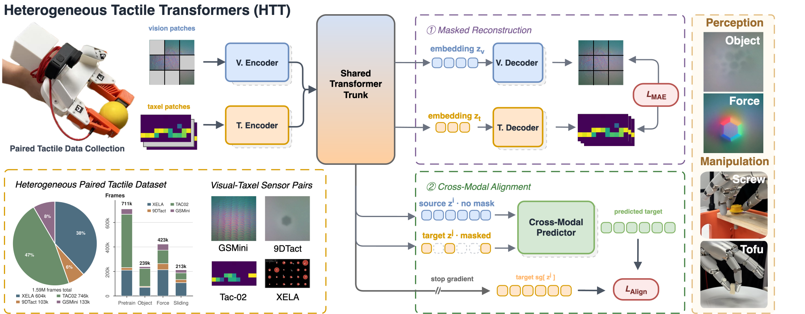
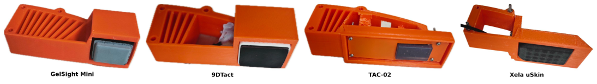
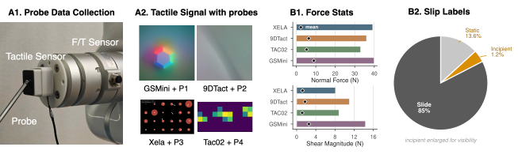
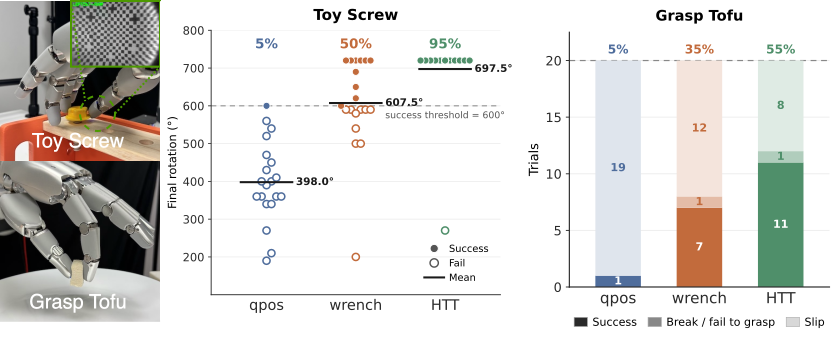

Under Review

Tactile sensors are inherently heterogeneous: a model trained on one sensor cannot be directly used on another, which limits learning contact-rich manipulation policies from diverse tactile data at scale. To bridge this gap, we propose the Heterogeneous Tactile Transformer (HTT), a framework that learns shared tactile representations across heterogeneous sensors. HTT consists of sensor-specific encoders and a shared transformer trunk, and is pretrained with per-modality masked reconstruction together with cross-modal alignment between paired sensors. Pretraining uses our novel Heterogeneous Paired Tactile (HPT) dataset, containing 1.6M synchronized paired frames across four vision- and array-based tactile sensors. Across distinct tactile perception and real-world manipulation tasks, HTT is shown to learn transferable representations that adapt to new tasks and previously unseen sensors. Dataset, code, and model checkpoints will be released upon publication.



Raw tactile streams across the four heterogeneous sensors used for force estimation and slip detection.
Force Estimation
Slip Detection
HTT embeddings boost policy learning on contact-rich simulated tasks, with two tactile modalities: RGB tactile images and force-field (FF).
Bulb Installation
Peg Insertion
Sharpa hand on a Franka arm, camera-free. qpos: joint positions only; wrench: qpos + 6-D fingertip force; HTT: qpos + HTT tactile embeddings (zero-shot on unseen sensors).
Toy Screw (success rate — qpos 5%, wrench 50%, HTT 95%)
Grasp Tofu (success rate — qpos 5%, wrench 35%, HTT 55%)
@article{bi2026htt,
title={Heterogeneous Tactile Transformer},
author={Bi, Jianxin and Wang, Qiang and Reddy, Jayaram and Lin, Kelvin and Khajikhanov, Soibkhon and Gao, Ruihan and Soh, Harold},
year={2026},
}